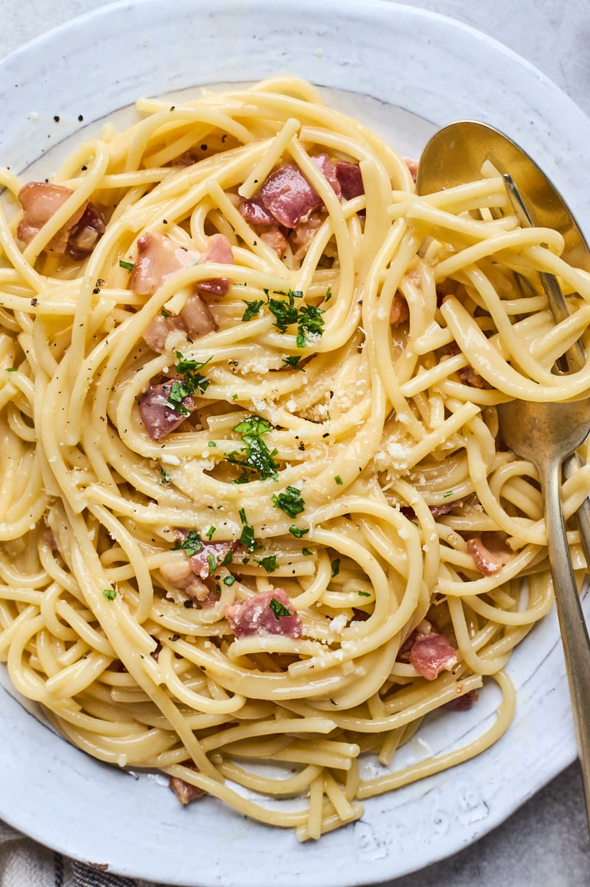

Spaghetti Carbonara Recipe

Servings: 4 | Prep Time: 10 mins | Cook Time: 20 mins | Total Time: 30 mins
Spaghetti Carbonara is a classic Italian pasta dish made with egg, hard cheese, cured pork, and black pepper. The dish originated in Rome and is known for its creamy texture and savory flavors, without the use of cream. The key to a perfect Carbonara is to use fresh ingredients and to mix the pasta with the egg mixture off the heat to create a creamy sauce without scrambling the eggs.
Ingredients
- 400g spaghetti
- 150g pancetta or guanciale, diced
- 3 large eggs
- 1 cup freshly grated Parmesan cheese
- Black pepper, freshly ground
- Salt, to taste
- 1 clove garlic, peeled
- 2 tbsp olive oil
Steps
- Bring a large pot of salted water to a boil. Add spaghetti and cook until al dente, according to package instructions.
- While the pasta is cooking, heat olive oil in a large skillet over medium heat. Add the pancetta and garlic clove. Cook until the pancetta is crispy, then remove and discard the garlic.
- In a bowl, whisk together eggs, Parmesan cheese, and a generous amount of black pepper until well combined.
- Once the pasta is cooked, reserve a cup of pasta water, then drain the spaghetti and add it to the skillet with the pancetta. Remove from heat.
- Quickly pour the egg and cheese mixture over the hot pasta, tossing rapidly to combine. The heat from the pasta cooks the egg, creating a creamy sauce. If the sauce is too thick, add a little reserved pasta water to reach the desired consistency.
- Season with salt and more black pepper to taste. Serve immediately, garnished with additional grated Parmesan cheese.